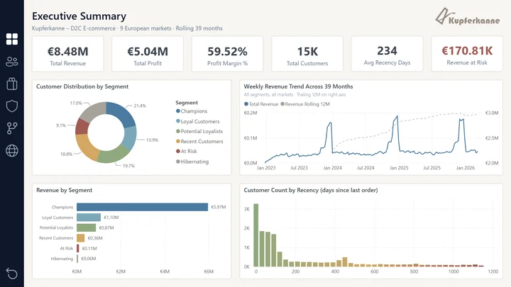
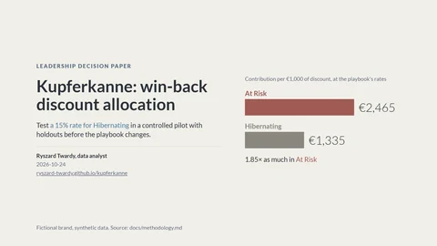
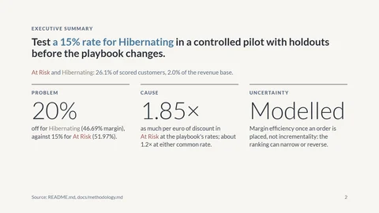
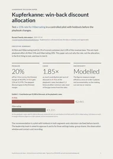
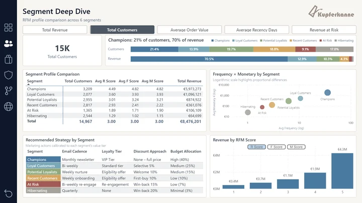
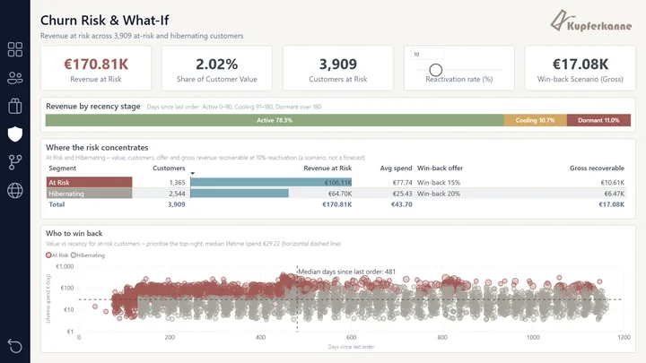
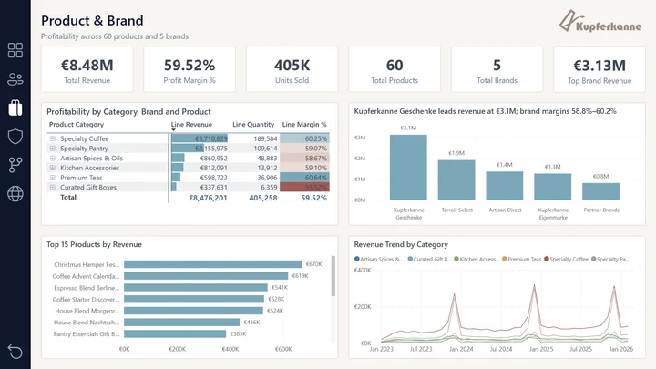

Per discount euro, most of the win-back gap comes from the playbook's rates
RFM segmentation and a win-back discount pilot design for Kupferkanne
- 168,777 orders
- 8.48M EUR revenue
- 9 European markets
- 14,967 customers scored
Fictional brand, synthetic data with seeded defects, January 2023 to March 2026.

Three ways into the decision: one slide, a deck, a report
-
60 seconds

The cover slide
The decision asked for and the headline number.
Open slide 1 (PDF) (opens in a new tab) -
3 minutes

The deck
Eight slides and four appendix slides; each title states its claim.
Open the deck (PDF) (opens in a new tab) -
10 minutes

The decision report
Six A4 pages written to be read alone, with the pilot's decision rule in full.
Open the report (PDF) (opens in a new tab) -
Deeper
The working files
At the playbook's rates, At Risk retains 1.85 times as much per discount euro; at either common rate, about 1.2 times
The win-back playbook grants its deepest discount to its thinnest margin: 15% off for At Risk, 20% for Hibernating. In contribution per euro of discount, most of the gap between them comes from the playbook's rates rather than from the segments.
Contribution (EUR) per 1,000 EUR of discount, on orders placed. Filled: the playbook's rates; blue ring: the rate under test.
1.85×
in At Risk at the playbook's rates
about 1.2×
at either common rate
- At the playbook's rates. At Risk retains 36.97 points of contribution after a 15-point discount; Hibernating retains 26.69 after 20. Each 1,000 EUR of discount retains an expected 2,465 EUR in At Risk against 1,335 EUR in Hibernating: 1.85 times as much.
- At one common rate. With either rate applied to both segments, At Risk retains about 1.2 times as much; swap the rates and the ranking reverses.
- In scale. The two segments hold 3,909 of 14,967 scored customers (26.1%) but 170.81K EUR of lifetime spend, 2.0% of the revenue base: a broad, shallow pool.
The recommended pilot tests Hibernating's rate first, then a break-even floor and contact priority
These figures measure margin on orders placed, not incrementality: an At Risk customer may have ordered without the offer, so the incremental ranking can narrow or reverse. The pilot randomises each segment into offer and holdout groups and tests Hibernating at 20% and 15%; on the same data it then tests a break-even floor per offer and, if the budget cannot cover everyone, whether At Risk goes first until its pool is exhausted. Each decision keeps the current playbook unless a 95% interval clears its threshold. The pilot has not run: the repository holds no campaign response history.
The data is synthetic: margin and discount gradients are properties of the generator, so the figures show the method, not a market.
Ten SQL steps in BigQuery feed a 105-measure Power BI model
-
BigQuery warehouse
Ten SQL steps: audit, clean, explore, score, build marts, assert coverage
- 80 CSV shards, about 462K raw records in
- 11 tables and 22 views out
-
Semantic model
PBIP/TMDL, Import mode, under version control
- 12 tables, 7 single-direction relationships
- 105 DAX measures
-
Power BI report
Six report pages plus a customer drillthrough
- Power BI service, no sign-in
A KPI harness re-asserts revenue (8,476,200.74 EUR) and customers (14,967) after pipeline changes; 29 data-quality checks run before cleaning and another 29 after.
Three modelling choices keep the segments and margins checkable
Customers are scored by quintiles, not clusters
Recency, frequency and monetary value are each scored 1–5 with NTILE(5); the sum (3–15) maps to six segments. Recency is anchored to the last order date, so results reproduce on a frozen dataset. The recorded trade-off: a sum hides which score drives it.
ADR 0006: RFM segmentation with NTILE(5) (opens in a new tab)
Orders and order lines sit in separate facts that must agree
Order-grain sales_curated (168,777 rows) carries revenue and segmentation; line-grain v_items_for_bi (about 273K rows) carries product detail. Measure names carry the grain, and a reconciliation measure asserts the grains agree (expected 0).
Margin is weighted by revenue at every level
Margin is total profit over total revenue (59.52%), never an average of per-order margins, which over-weights small orders. The equal-weight brand margin (59.63%) is kept as a labelled benchmark, so a mix shift cannot hide behind one number.
Three report pages show the playbook, the pool at risk and the margin behind them



Every figure on this page traces to a public source file
-
Live report
In the Power BI service, no sign-in.
Open the live report (opens in a new tab) -
EDA notebook
The distributions behind the quintile thresholds, from eight exploratory views that run before any scoring.
Read the notebook (opens in a new tab) -
Win-back exhibits
Three exhibits with their data tables; the render stops if a figure drifts from the methodology.
See the exhibits (opens in a new tab) -
Source on GitHub
SQL pipeline, PBIP/TMDL model, KPI harness and fifteen architecture decision records; MIT licence.
Open the repository (opens in a new tab)
BigQuery (GoogleSQL), Power BI (PBIP/TMDL, DAX), Python, Quarto
Built end to end by Ryszard Twardy; AI-assisted tooling is disclosed in the repository.